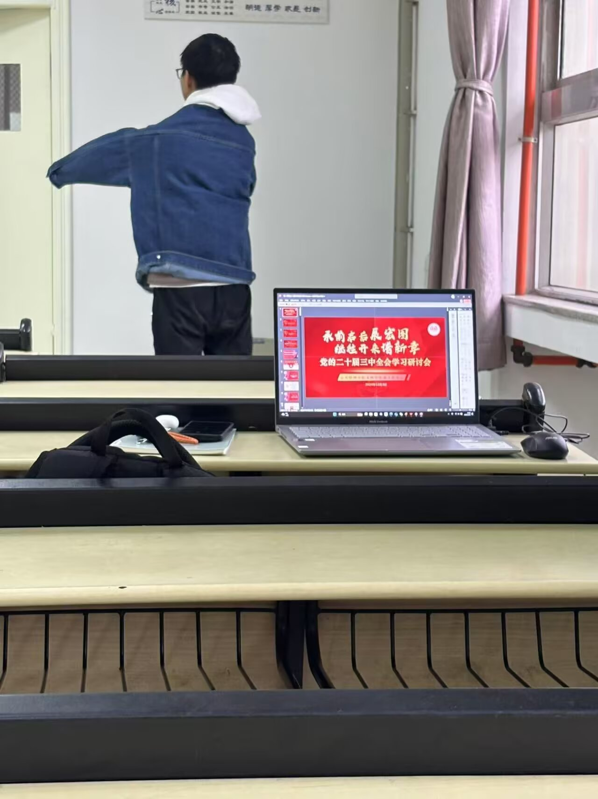
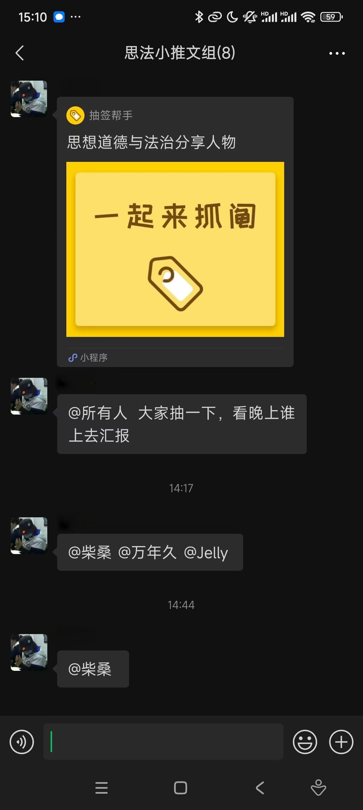
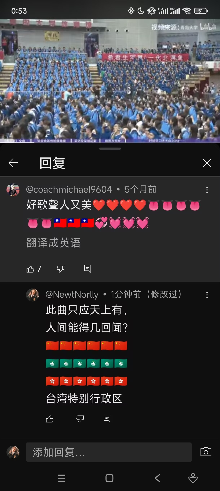
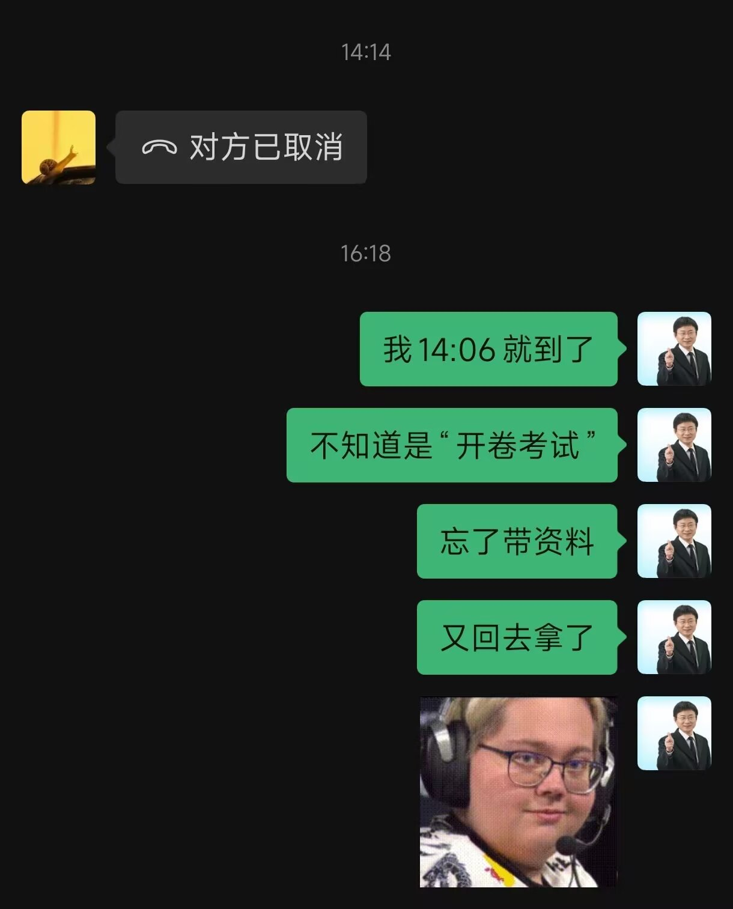
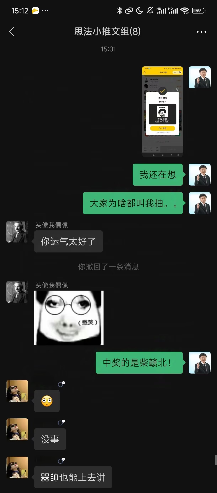

Journal · 2025-01-10
湖北省武汉市
2025年1月10日 22:00
甲辰年冬月下旬某日上午十一点半
华科紫菘
室友 1：“小槑又出去卷啦？”
室友 2：“小槑还躺在床上……”





Jan 10, 2025 22:00
On a morning in late winter of the Jiachen year, at half past eleven
Zisong, HUST
Roommate 1: "Little Méi went out to grind again?"
Roommate 2: "Little Méi is still lying in bed..."
10 janv. 2025 22:00
Un matin, à la fin de l'hiver de l'année Jiachen, à onze heures et demie
Zisong, HUST
Colocataire 1 : « Le petit Méi est encore sorti bachoter ? »
Colocataire 2 : « Le petit Méi est encore couché dans son lit... »
10.01.2025 22:00
An einem Vormittag im Spätwinter des Jiachen-Jahres, um halb zwölf
Zisong, HUST
Mitbewohner 1: „Der kleine Méi ist schon wieder raus zum Schuften?“
Mitbewohner 2: „Der kleine Méi liegt noch im Bett...“